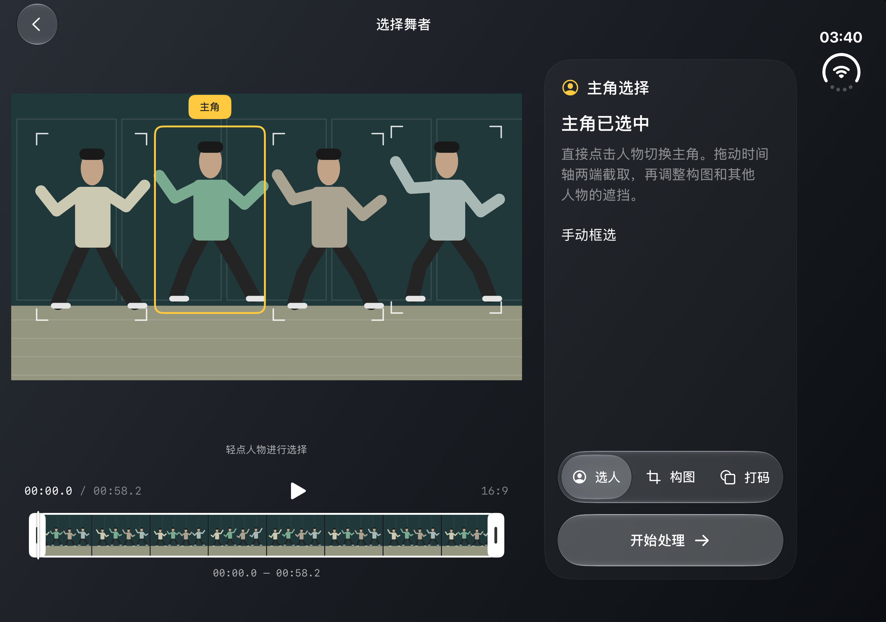
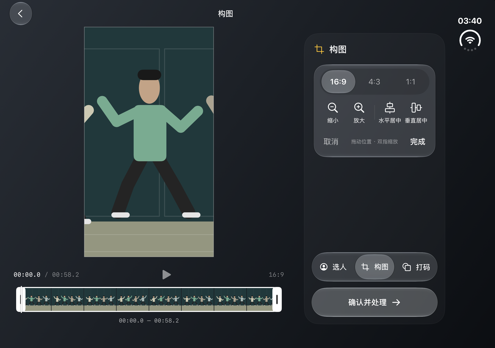
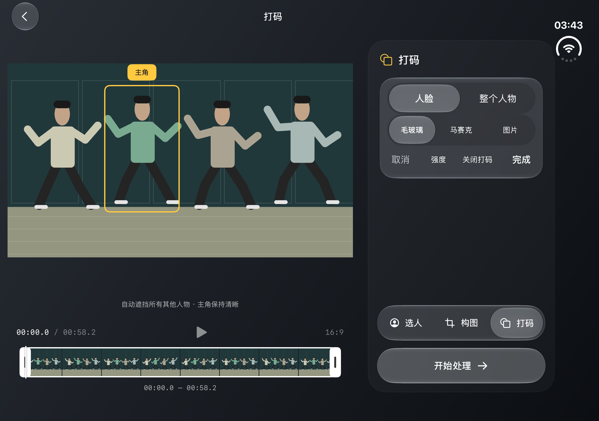
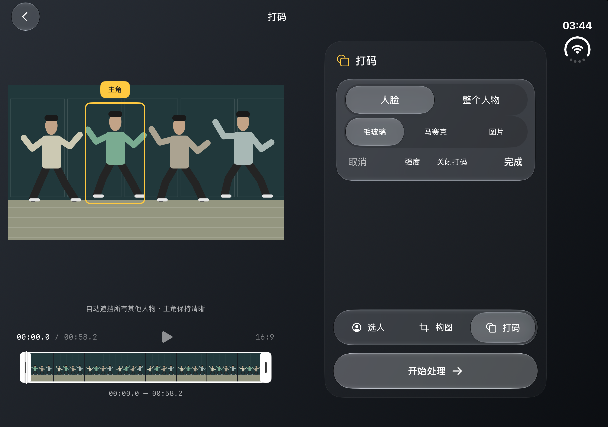
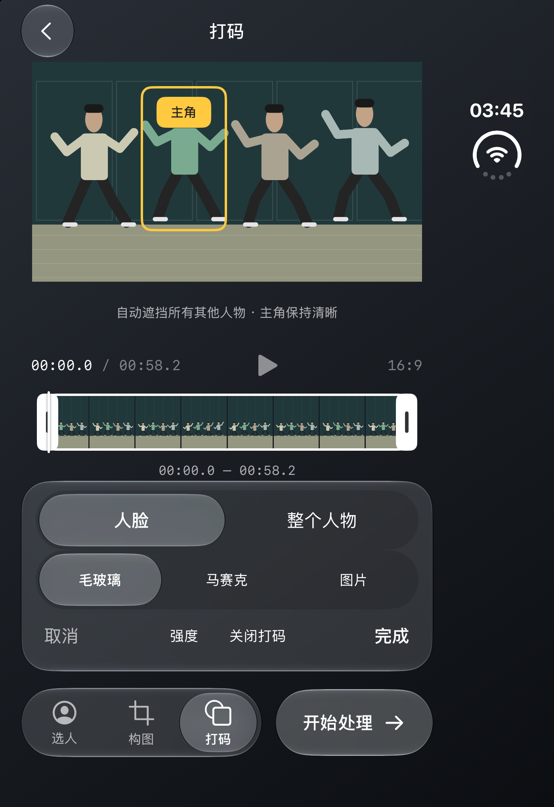
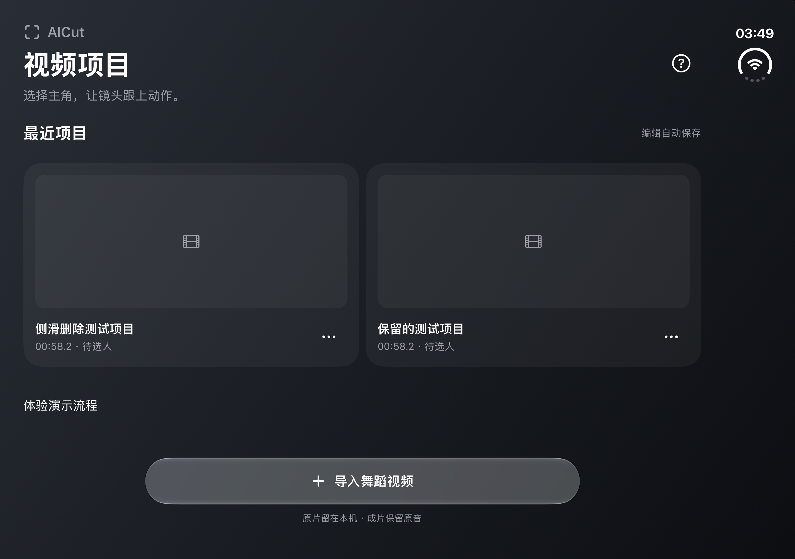

iPhone Duo · iOS 27.1 模拟人物界面截图。使用桌面 3840 × 2160、37.92 秒原视频验证；编辑页无需滚动。
视频区域扩大，时间轴回到画面下方；右侧只放设置与操作。

玻璃比例切换、缩放和独立居中；工具不挤占时间轴。

触控选项分组展示，主操作保持底部整行可达。

系统可以重新分配两侧空间，避免硬性比例导致内容消失。

闭合后保留所选主角，回到紧凑的手机布局。

展开时使用双列项目卡片，保留底部玻璃导入入口。
